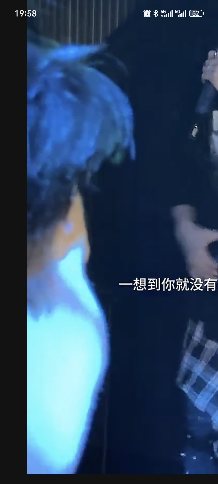
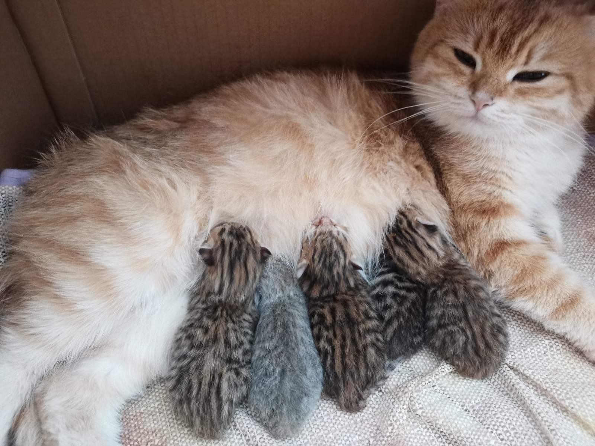

我第一眼竟然看成长发蓝色包臀裙[憨笑][宕机] 
好可爱的笨笨[蜜蜂狗]
你们都误会我胖婶了[流泪]
谁看不气！这动作表情[微笑][微笑]！！
告诉大家吧，胖婶的直觉是对的，这俩确实有事！
可是这个男老师确实跟景老师表白，还对景老师老公说她两才是灵魂伴侣，[尬笑][尬笑]
有名份了:农村糟糠之妻就忘了，人不能忘本，赵坤美![赞][赞][赞][赞][赞][赞][赞][赞]
知道为什么河南大部分没有族谱吗
河南应该每个县城都有烈士陵园吧
河南族谱都打没了[流泪][流泪]，我不想说什么，我们都是中国人，都是一家人，没有什么哪个省怎么怎么了，哪个地区都有汉奸，但是更多的都是烈士[流泪][流泪]
我不明白为什么会有人歧视河南[流泪]
要知道，客家人祖籍大部分都是河南人，河南抗战时期出粮出人，即便是现在河南小麦，蔬菜，水果，也是供应全国，交通输送全国第一，河南人并没有抱怨，哪怕高考压力大，只有一个211，有本事就考，没本事就出去务工。别喷河南了，游走全国各个省，河南人的朴实不卑微，热情无所图。
我河南周口的，我们那里基本没有祖坟，我家祖坟是从我太奶奶那辈开始的[泣不成声]
他们朝我扔玉牌，我拿起玉牌拜三拜[憨笑]
他们朝我扔猪头肉，仔细一看是我二舅。
不许学这个小pa。。
他们朝我，我就哦哦哦哦哦
小 pa 别啥都学[捂脸]
真不敢相信这声音是从可爱的小pa的嘴里发出来的[捂脸][捂脸]
下个视频是不是就该丢手绢了[看]
听完感觉自己长这样
不许朝小pa扔粑粑！
哪吒票房要有危机感了…
终于有人发视频了，这几年从来都没有人提到过，我都严重怀疑，官网给这个消息封了
能让平民百姓知道的事不是大事[憨笑]
然后呢，我能做得到什么[捂脸]
弄到最后。。猫没生自己先瘦两斤
但是你好像比它多走一倍
它，不爱玩激光笔吗？[宕机][宕机]
目前还没有生 种公个头大 估计不太好生
气死我了全是这样的配色[流泪][流泪] 
你们养过猫没用，猫平均65天生，猫咪胆子小明显只想往家跑，所以不来回跑[憨笑]
记得 生了以后母猫喂奶的每个奶t都要让小猫吃过！！！不然会堵住变成硬块，这样母猫就得吃药，小猫只能人工俩小时喂养。亲身经历！！！！
我就是超级后悔给我们家小猫找了一个很壮的男猫，导致最后一个生不下来[流泪] 刨出来的时候在肚子里死掉了，子宫也取了，做手术的时候我在外边忍不住都哭了，太后悔了，还不如绝育，让她遭受这么大的罪
为了孩子操碎了心[流泪]
我天评论区自以为是的人好多，作者都在评论区解释了好几遍了它对激光笔逗猫棒不感兴趣，在楼道也不是跟人跑是只会往家的方向跑，还一群人在那指指点点
清唱和真唱之间 你选择了清真唱[捂脸]
还是忘不了法图麦吗
把伊布里斯都给唱哭了
如果当时 是我个人觉得许嵩写的最美的一首[流泪]
一直以为“我喂你尝最后的毒药”[困]
这个姑娘很低调 踏实[赞][赞]有实力 但是没资本包装她 没流量 不对 她是运动员 带货直播才需要流量[赞]
中国过马路的方式最特别，等聚集一波人，有一个人带头然后大家一起走[捂脸]
中国启用俄罗斯方案后，你会发现隔壁王婶家新修一栋房子，全是过马路的砖块[看]
俄罗斯这个好[捂脸]
这么矫情的爸爸，这么客气的儿子，没见过[抠鼻]
五年没有一个电话，突然回来还叫人家别结婚，你以为你谁啊
其实黄亦玫这里心里还是有庄国栋 她并没有放下 只是她心里明白就算在一起了 以后还是会重复之前的那种被他放弃或者被他靠后排的 她很聪明再疼也硬是逼自己放下了
然后被皮套撑的…牙缝宽[泣不成声]
太逗了 让一个皮套给套这么久哈哈
[偷笑]你老公是钓鱼佬吧[捂脸]这个非常像钓鱼那个皮筋颗粒的橡皮筋[捂脸][捂脸][捂脸]
里子才是这被子的灵魂。
有种宅斗剧里 陪嫁丫头成了小妾 持宠而娇欺负主母的感觉[尬笑][尬笑][尬笑]
这部剧眼睁睁的看着，爱纯和那三个海女，从晚辈处成了同龄闺蜜[泪奔]
其实这部片子里就没有真正的坏人，除了那个没露面的哲龙[微笑]
只不过是老了，孤独了，想要儿女给他养老，想让人陪他了
但他年轻时候打宽植[流泪][流泪]宽植手受伤了，他也不让船掉头[流泪]
其实夫商吉这个人，从早期我就感觉不是完全坏，和爱纯从年轻就开始斗，但是爱纯踢他还有其他故意和他作对的时候，他最多就是气到狂吼，但是没有对爱纯动手过
去骑个自行车都能遇到出轨的女人！！！！！
他年轻的时候还打老婆呢[尬笑]
声音在我脑子里转~转~转~
只带了一个耳机，看到评论默默拿起另一只[衰][衰]
带着耳机的我
左右晃的我耳朵好痒好想笑[黑脸]
感觉耳朵里装了个滑动变阻器
甩的真快，像她甩你一样哈[泣不成声][泣不成声]
Read more: